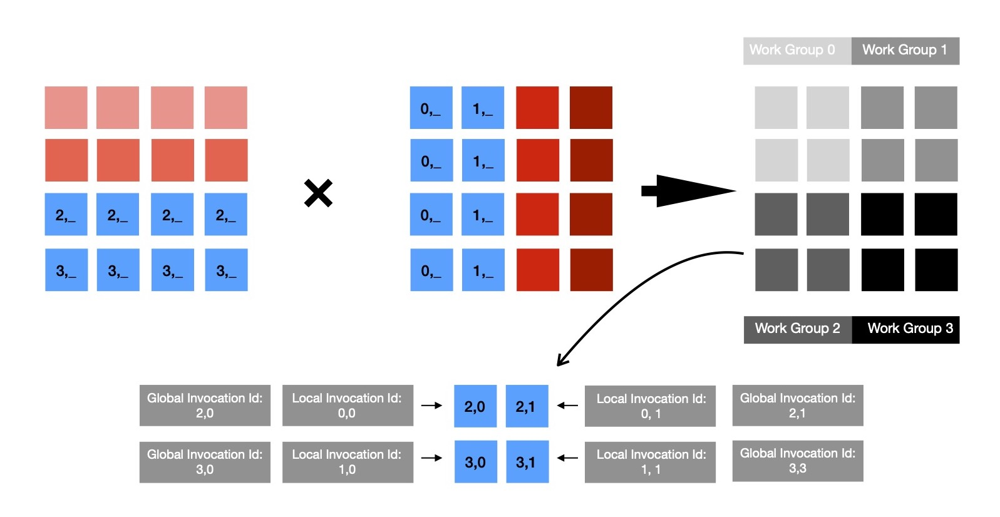

This week I was trying to implement Matrix Multiplication, on GPGPU using Vulkan Compute API, which is pretty easy to parallelize, given that each cell of resulting matrix can be computed independent of any other cell. This is a simple good data parallel problem, where same kernel can be run for each cell of resulting matrix, while input is read from two immutible buffers ( read Matrix A, B ). For understanding performance gain when run on GPGPU, I planned to implement naive matrix multiplication algorithm, which runs with time complexity O(N ** 2), in both CPU & GPU executable form. Given that GPUs are massively parallel machines, multiple cells of resulting matrix can be computed at a time, while paying very low synchronization cost, given nature of problem at hand.
When computing matrix multiplication on CPU, I make use of two nested loops, where each iteration of inner most loop computes value at a certain cell of resulting matrix with formula
If I work with two 4 x 4 matrices, multiplication algorithm looks like 👇. For making it more generic, first LHS matrix's #-of columns & RHS matrix's #-of rows need to be equal. Otherwise, multiplication is not possible. Two nested loops iterate in a such a way so that it's possible to generate indices of each cell of resulting matrix of dimension M x P, when LHS(M x N) & RHS(N x P).
It's clearly understandable that each cell of resulting matrix C can be computed independently, without any data dependency --- easily parallelizable. Now each invocation of compute shader ( read kernel running on GPU ) computes single cell of resulting matrix & exits; as many of these invocations can be run by GPU at same time speed up is quite noticeable.
During each invocation of compute shader, following code snippet is run, which reads input from LHS, RHS matrix's respective rows & columns; computes result & finally writes computed value for cell (i, j) at respective memory location. Notice, how one dimensional array being used for respresenting/ accessing two dimensional matrix.